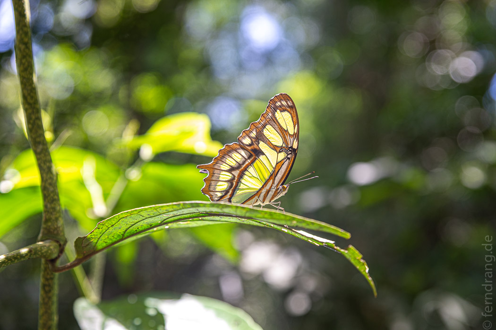

Um kurz nach acht waren die Schlangen am Eingang noch harmlos und die Wege einigermaßen leer. Wir mussten nicht weit auf den Stegen des oberen Rundwegs laufen, bis wir den ersten Blick auf diese irren Wasserfälle werfen konnten.
Der Rio Iguazu ist vor den Fällen mehr als einen Kilometer breit. Und mitten in einer behäbigen Kehre scheint ein Loch im Land zu sein. Wie durch einen gigantischen Abfluss in der Mitte schießt der Fluss in zwei Stufen herab und fließt 80m tiefer schmal und reißend weiter. Wir kamen aus dem Staunen nicht heraus.
Die toll angelegten Stege führen über das Wasser direkt bis an die Kante mehrerer der zahlreichen Wasserfälle. Das ewig gleich und doch immer wieder anders stürzende Wasser hat uns sofort hypnotisiert. Zum Glück hantierte immer schnell jemand mit seinem Selfie-Stick und hat den Bann gebrochen. Denn hinter der nächsten Ecke wartete schon der nächste märchenhafte Blick.
Es gibt noch einen zweiten Weg auf dem unteren Niveau, bei dem man näher an einige der Wasserfälle herankommt. Hier konnten wir uns von der Gischt ein wenig erfrischen lassen, denn bei 34° und so viel Wasser in der Luft wird einem doch schnell heiß.
Die Wasserfälle sind in einem schönen Regenwald gelegen. Schon auf den Stegen sind wir von vielen Schmetterlingen umflattert worden. Aber richtig dschungelig wurde es auf dem „Macuco Trail“, einem 3,5km langen Wanderweg zu einem weiteren Wasserfall. Wenn man nur langsam genug geht, wird aus jedem Meter Wald ein kleiner Zoo. Begleitet von einem ohrenbetäubenden Zikadenkonzert sind wir über Gottesanbeterinnen, Leguane, Schmetterlinge, irgendwelche Rinden-Tarn-Insekten und zu guter letzt (Jackpot) ein Gürteltier gestolpert.

Am Ende des Weges ist ein kleiner Wasserfall in dem man baden und sich etwas erfrischen kann. Das wäre allerdings nicht nötig gewesen, da beim entferntesten Punkt des Weges ein tropischer Regenwald-Guss eingesetzt hat, der uns in Minuten bis auf die Knochen durchnässt hat. Der Waldweg hatte sich in eine einzige kilometerlange Pfütze verwandelt.
Wir hatten aber noch etwas Zeit zum trocknen, da wir uns den Höhepunkt des Parks bis zum Schluss aufbewahrt hatten. Ein über einen Kilometer langer Steg führt über zahlreiche winzige Inseln in die Mitte des Flusses und endet direkt an der Kante des „Teufelsschlunds“, den Hauptfällen. Dort herrschte zwar ziemliches Gedränge, aber durchaus zu Recht. Der Blick in die weiße Hölle ist atemberaubend - und das dazu gehörende Getöse auch. Wir konnten uns kaum sattsehen.